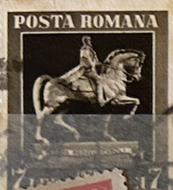
| SOURCE | TITLE| IMAGE MATCH | click to source page |
| allnumis.com | 7 Lei - Statue of King Carol I, on horseback, 1939 - Romania - Stamp - 26608 | 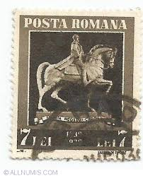 |
| Find Your Stamps Value | At Calafat 50b violet brown stamp price, value | 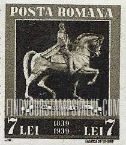 |
| eBay | ROMANIA:1939 MNH SC#483 MNH Equestrian AA560 | eBay | 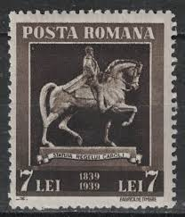 |
| eBay | Firenze Cosimo I Giambologna Horse Statue Vintage Postcard 532 | eBay | 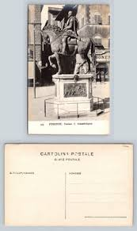 |
| Bob Shop | Books - World War 1 - What to do in Rome - Given to Soldiers for sale in Heidelberg (ID:671590226) | 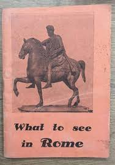 |
| eBay | Romania - 1939 The 100th Anniversary of the Birth of King Carol I #3 | eBay | 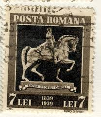 |
| Find Your Stamps Value | Statue of Marcus Aurelius (121-180), Roman Emperor 750l Multicolored stamp price, value | 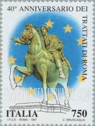 |
| eBay | PHOTO ON GLASS,ART FUNERARY MONUMENT SIR JOHN HAWKWOOD FRESCO BY PAOLO UCCELLO | eBay | 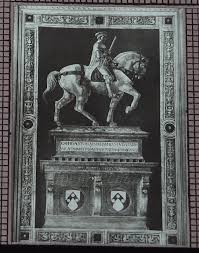 |
| eBay | Softcover, Wraps Exploration & Travel Antiquarian & Collectible Books in Italian for sale | eBay | 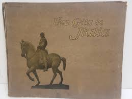 |
| Amazon.com | The Pompeiian: The Parthian Shot: Viginti, Julla S.: 9798653169229: Amazon.com: Books | 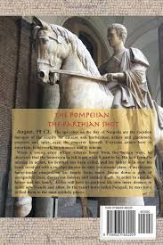 |
| PicClick | 1997 REPUBLIC ITALIAN n.2320 Fiera Di Roma 1 V. MNH MF134129 $1.25 - PicClick | 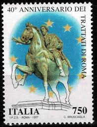 |
| Emory University | Statue of a Young Woman, Dedication: Al Carissimo Amico Flecher – Works – Emory University | 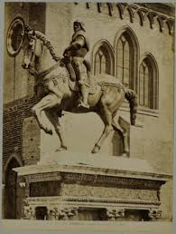 |
| eBay | Marco Cavalli | eBay | 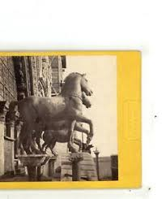 |
| eBay | 1930 ITALY INFANTRY AND ENGINEER COMPLEMENTARY OFFICER STUDENT SCHOOL SPOLETO | eBay | 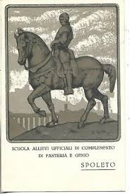 |
| eBay | Turin Via Po Particular Framed Postcard Animated Travelled 9.9.1900 | eBay | 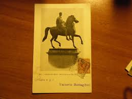 |
| eBay | Postcard Italy Undivided C. 1906 Bartolomeo Colleoni Monument Unposted | eBay | 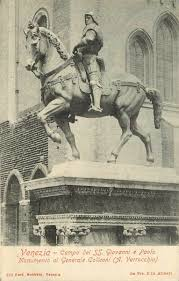 |
| Amazon.sg | Storia E Preistoria (Original Soundtrack): Amazon.sg: Music | 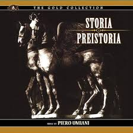 |
| eBay | 47402 - Bergamo - Cappella Colleoni - Cavallo dorato - AK, gelaufen 17.9.1960 | eBay | 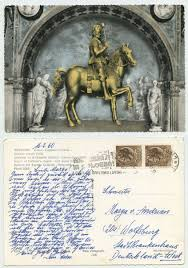 |
| Find Your Stamps Value | Triumph of Venice,” by Vittore Carpaccio 50l Ultramarine & multicolored stamp price, value | 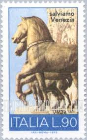 |
| eBay | vtg postcard BALBO PADRE FATHER Trampetti Naples sculpture unposted horse | eBay | 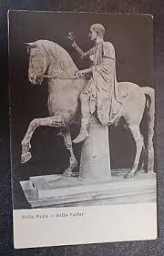 |
| emuseum.com | Emperor Marcus Aurelius Offering a Sacrifice, after Francesco Primaticcio, after the Antique – Works – Blanton Museum of Art | 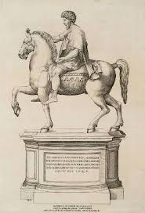 |
| The University of Chicago | The Emperor's Nightingale: Some Aspects of Mimesis | 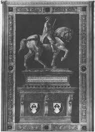 |
| Blogger.com | English 18th Century Portrait Sculpture: Equestrian Statues of Marcus Nonius Balbus Senior and Junior, Naples. | 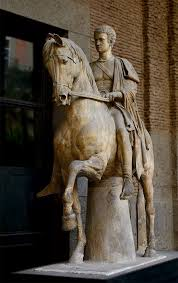 |
| Discogs | Piero Umiliani – Storia E Preistoria – CD (Album, Limited Edition), 2022 [r23277656] | Discogs | 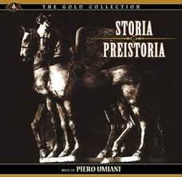 |
| eBay | Napoli Museo Nazionale Marco Nonio Balbo padre Antique Sculpture Postcard | eBay | 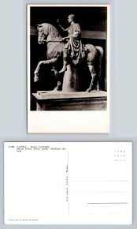 |
| Alamy | John hawkwood hi-res stock photography and images - Alamy | 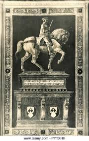 |
| The Museum of Fine Arts, Houston | Colleoni Chapel - Monument for General Bartolomeo Colleoni | All Works | The MFAH Collections | 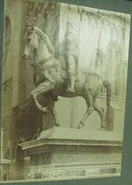 |
| Herculaneum in pictures | Basilica Noniana | 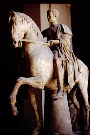 |
| X | The Knight | 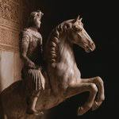 |
| Blogger.com | On Being the Opposite of a Moth: A Knight of Dark Renown | 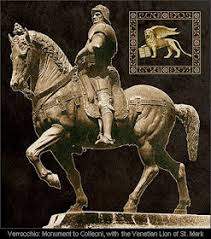 |
| eBay | Italy - ROME - Campidoglio - Statue Of Marcus Aurelius (C6343) | eBay | 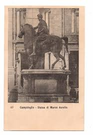 |
| Medium | Marcus Aurelius. The Philosopher-Emperor and His Stoic… | by Stefan Chardakliev | Medium | 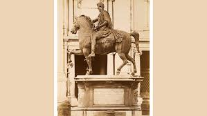 |
| Album Online | MARCO AURELIO CLAUDIO - Stock Photos, Illustrations and Images - Album | 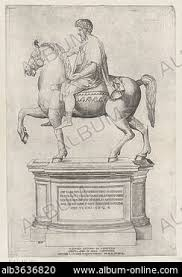 |
| buyhungarianstamps.com | 2574 Romania - Michael the Brave Statue, Imperf. S/S (MNH) – Eastern Europe Postage Stamps | Hungaria Stamp Exchange | 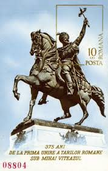 |
| eBay | Praeger Picture History of Art(1962) *580 Illustrations and the History of Art | eBay | 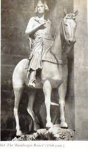 |
| Tripod (Lycos) | Sir John Hawkwood | 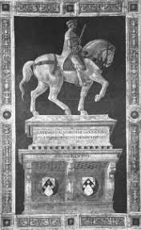 |
| eBay | 1913 MILITÄRISCHE AK RITTERFÜHRER ROTE FELDZUG VGT vergoldet Thaon Revel | eBay.de | 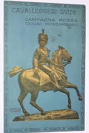 |
| Ephemera Finds | Le Colleone, Venise Artwork by Verrocchio Vintage Graphic Art Illustra – Ephemera Finds | 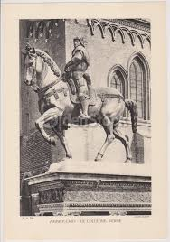 |
| Pngtree | Simple Nose Drawing Background Images, HD Pictures and Wallpaper For Free Download | Pngtree | 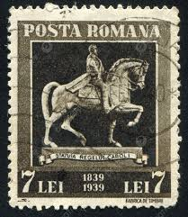 |
| PICRYL | 7 Equestrian statues of marcus nonius balbus naples Images: PICRYL - Public Domain Media Search Engine Public Domain Search | 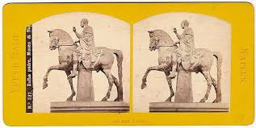 |
| eBay | Statue Of Marcus Aurelius Rome Italy c. 1871 Engraving (378) | eBay | 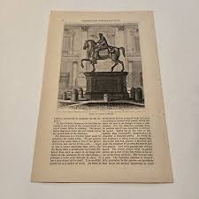 |
| Ancient World Magazine | Naples - Ancient World Magazine | 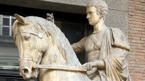 |
| eBay | Postcard Rome Campidoglio Statue Of Marcus Aurelius 1903 (C 58) | eBay | 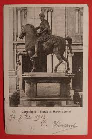 |
| eBay | Hotel Alimandi Roma Rome Italy Travel Booklet | eBay | 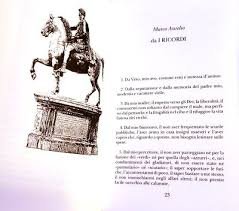 |
| eBay | Vintage Postcard,NAPLES,ITALY,"Emperor Napoleon On Horseback"Statue,Balbo Figlio | eBay | 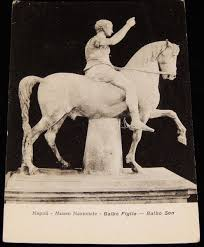 |
| eBay | AOP) Italy WW1 Delandre poster stamp - BRIGATA LAGUNARI | eBay | 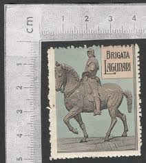 |
| Bridgeman Images | Image of Equestrian statue of King William III (engraving) by Rawle, Samuel (1771-1860) | 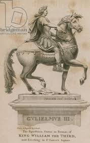 |
| Project Gutenberg | The Project Gutenberg eBook of The Gentle Art of Faking, by Riccardo Nobili. | 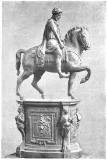 |
| PICRYL | Franz Anton Bustelli - Pantaloon, 18th century, Nymphenburg porcelain manufactory - PICRYL - Public Domain Media Search Engine Public Domain Search | 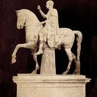 |
| eBay | ROMA Statue equestre di Marco Aurelio Postcard Vintage Black and White Art | eBay | |
| Flickr | M. Nonius Balbus - equestrian statue from the Forum area, … | Flickr | |
| eBay | Postcard Real Photo Gattemelata Statue Commander Erasmos Sculptor Donatello Rome | eBay | |
| Modelled 1826/27 with a view to its being erected in bronze in Warsaw. Poniatowski was a Polish statesman and general. In the struggle for his country's independence he took the side of | ||
| classic-literature.co.uk | John Lord – Marcus Aurelius : Glory of Rome | |
| eBay | The Last Days of the Renaissance & The March to Modernity by Theodore K. Rabb | eBay | |
| eBay | ITALY WWI MILITARY BRIGATA LAGUNARI LABELS (W206) . SEE IMAGE NOTE: A LARG | eBay | |
| Heritage History | Heritage History | Historical Tales: 11—Roman by Charles Morris | |
| Look and Learn History Picture Archive | Equestrian Statue of Marcus Aurelius. (On the Capitol, at Rome) stock image | Look and Learn | |
| Prints Limited | Marcus Aurelius On Horseback Wall Art Prints – Prints Limited |